Utrzymanie maszyn w funkcjonowaniu magazynu
Zrozumienie danych
Wybrane przez nas zadanie analityczne dotyczy predykcji uszkodzenia maszyn magazynowych oraz analiza wrażliwości wybranych modeli.
Opracowywany zbiór danych zawiera następujące zmienne
UID - unikalny identyfikator
Product_ID - Numer seryjny produktu
Type - wariant jakościowy produktu
Air_temperature - temperatura powietrza w pokoju
Process_temperature - temperatura w której wykonywany jest proces
Rotational_speed - częstotliwość obrotowa
Torque - moment obrotowy
Tool_wear - czas pracy w minutach danego narzędzia
Machine_failure - czy wystąpiła usterka
Oraz wyszczególnione powody usterek:
TWF - tool wear failure - szkoda powstała w wyniku zużycie narzędzia
HDF - heat dissipation failure - szkoda powstała w wyniku dysypacji ciepła
PWF - power failure - usterka z powodów energetycznych
OSF - overstrain failure - przeciążenie maszyny
RNF - random failures - losowe uszkodzenia
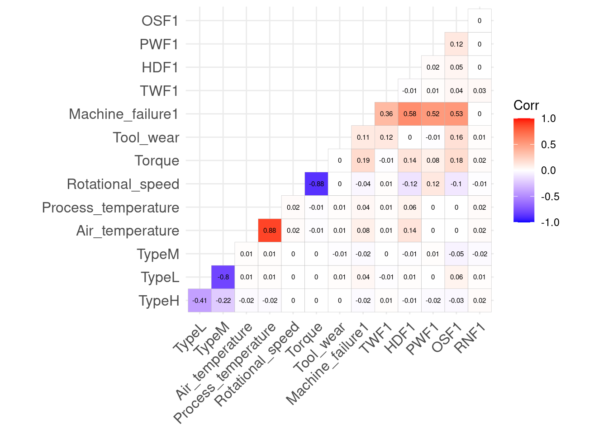
Z macierzy korelacji widać, że ustreki maszy (co logczine) skorelowane są z poszczególnymi typami problemów funkcjonowania, lecz co ciekawe losowe usterki nie mają żadnego wpływu na pracę maszyn.
Pozostałe silne korelacje również sa intuicyjnie logiczne tj. temperatura powietrza z temperaturą procesu oraz częstotliwość obrotowa z momentem obrotowym.

Wykresy rozkładu temperatur w przypadku powietrza sugeruje platokurtyczność oraz dla usterek maszyn dwumodalność z częstszym występowaniem w wyższych zakresach. Podobne zjawisko można zaobserwować dla temperatury procesu lecz kurtoza bliższa jest rozkładu normalnego dzięki czemu dla rozkładu w których występowały usterki uwydacznia się lewostronna asymetria. Możliwe że konieczne będzie transformowanie zmiennych dla lepszych rezultatów.

Rozkłady częstotliwości obrotowej niezależnie od występowania usterki maszyny kształtem przypominają rozkład \(\chi^2\) ze względu na bardzo silną asymetrię prawostronną. Natomiast w przypadku momentu obrotowego dla braku usterki rozkład kształtem przypomina dzwon Gaussa ze średnią 40. Powyżej tej wartości w rozkładzie obserwacji, gdzie wystąpiła usterka widać nagły wzrost częstości występowania uszkodzeń.
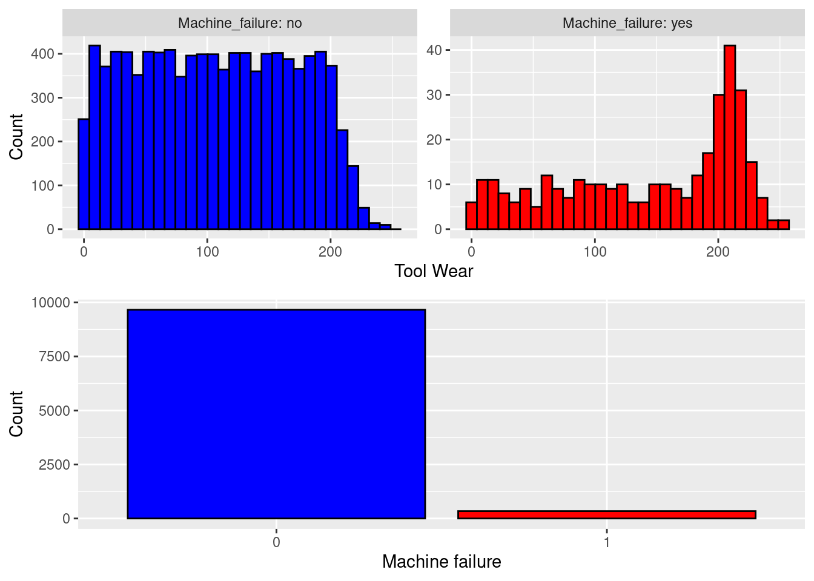
Rozkład zużycia narzędzia do dwusetnej minuty jest jednostajny, natomiast powyżej tej wartości następuje gwałtowny wzrost częstotliwości występowania usterek, pozwala to podejrzewać że jest to istotna zmienna w kontekście utrzymania maszyn.
Dodatkowo widać bardzo silne niezbalansowanie klas w przypadku usterek, będzie to wymagało uwzględnienia w przypadku budowania modeli uczenia maszynowego, szczególnie że jesto to zmienna która będzie przewidywana i dookoła której prowadzona będzie optymalizacja.
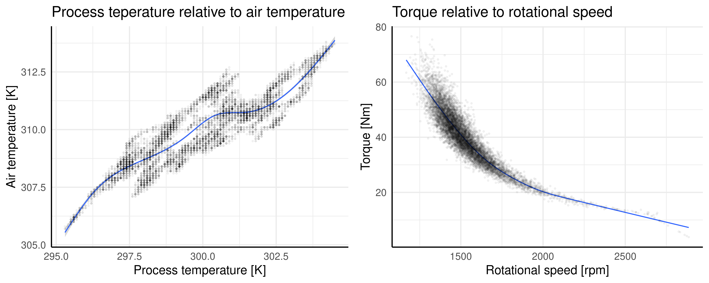
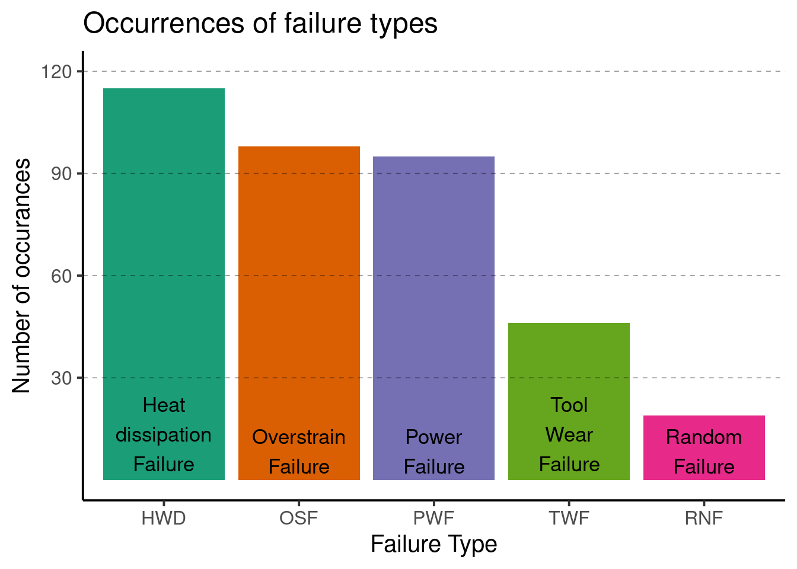
Najczęściej występującym typem usterki jest ta powstała w wyniku dyssypacji ciepła, drugim najczęstszym powodem wystąpienia usterek jest przeciążenie maszyny w nieznacznie mniejszej ilości przypadków jest to usterka z przyczyn energetycznych. Znacząco rzedziej występującym czynnikiem jest zużycie narzędzia, najrzadziej występujacą przyczyną są losowe uszkodzenia.
Budowa modeli uczenia maszynowego
Ze względu na silne niezrównoważenie klas zaobserwowane w części eksploracyjnej zdecydowaliśmy się na zastosowanie metody upsamplingu w technice SMOTE (Synthetic Minority Oversampling Technique) chcąc uniknąć zjawiska nadmiernego dopasowania przy jednoczesnym zachowaniu jakości predykcji.
Modele uczenia maszynowego zbudowane na cele zadania:
Random Forest
Decision Tree
Support Vector Machine
K-Nearest Neighbors
Bagging
XGBoost
Logistic Regression
Istotnym celem budowy powyższych modeli jest jak najlepsza jakość predykcyjna. Jest ona potrzebna do poprawnego wnioskowania podczas analizy wrażliwości - w końcu, czy moglibyśmy zaufać takiej analizie bez zbudowania bardzo dobrego modelu? Uznajemy, że w logistyce bardzo ważna jest sprawność maszyn i celem nadrzędnym jest maksymalizacja specificity, co sprawi, że jeśli nasza predykcja będzie się mylić to będzie to robić częściej w taki sposób, że będziemy obawiać się usterki, mimo że ona się nie wydarzy, za to będzie niewiele przypadków, gdzie umknie nam zagrożenie. Uchronienie maszyny przed zepsuciem nie tylko sprawia, że oszczędzimy pieniądze na naprawie, ale również magazyn będzie bardziej efektywny, ponieważ nie stracimy ważnego narzędzia na czas naprawy.
Dostroiliśmy hiperparametry modeli korzystając z walidacji krzyżowej, przeszukiwania siatki latin hypercube oraz optymalizując wyniki modelu pod względem specificity. Miary dopasowania dla wyżej wymienionych modeli wyglądają następująco:
Metric | Random Forest | XGBoost | Support Vector Machines | Decision Tree | Logistic Regression | K-Nearest Neighbors | Naive Bayes | Bagging |
F1 score | 0.9807451 | 0.9291234 | 0.9461806 | 0.9467275 | 0.8999547 | 0.9661017 | 0.9182810 | 0.9809504 |
Accuracy | 0.9632000 | 0.8716000 | 0.9008000 | 0.9020000 | 0.8232000 | 0.9360000 | 0.8532000 | 0.9636000 |
Sensitivity | 0.9709905 | 0.8719436 | 0.9034397 | 0.9021964 | 0.8238707 | 0.9448819 | 0.8545379 | 0.9709905 |
Specificity | 0.7471264 | 0.8620690 | 0.8275862 | 0.8965517 | 0.8045977 | 0.6896552 | 0.8160920 | 0.7586207 |
Recall | 0.9709905 | 0.8719436 | 0.9034397 | 0.9021964 | 0.8238707 | 0.9448819 | 0.8545379 | 0.9709905 |
J index | 0.7181169 | 0.7340126 | 0.7310259 | 0.7987482 | 0.6284684 | 0.6345371 | 0.6706299 | 0.7296112 |
Krzywe AUC-ROC
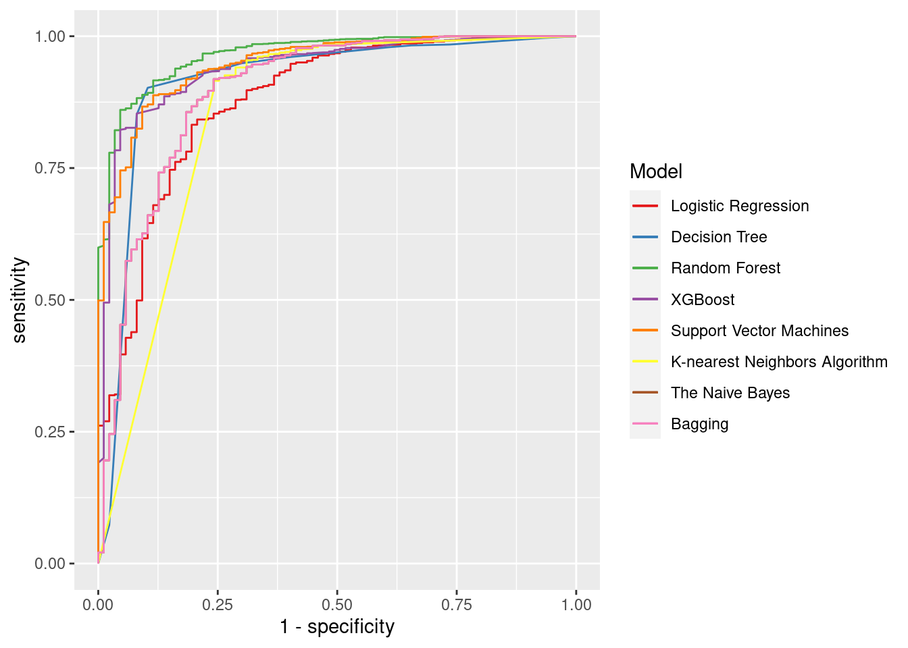
Do analizy wrażliwości wybraliśmy Random Forest ze względu na dobry wynik AUC-ROC, Decision Tree ze względu na najlepszy wynik specificity oraz Support Vector Machines i XGBoost ze względu na drugi oraz trzeci wynik ze względu na AUC-ROC i specificity.
Kontrola jakości i analiza wyników
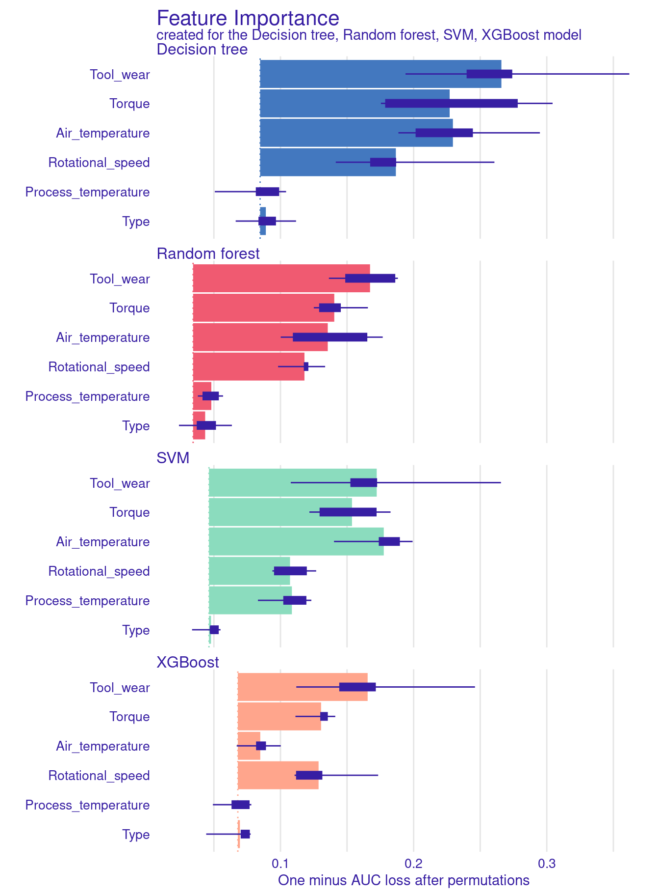
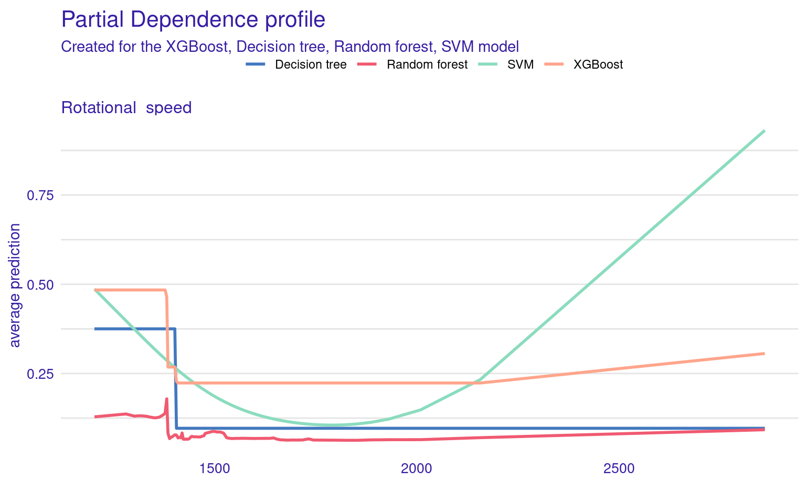
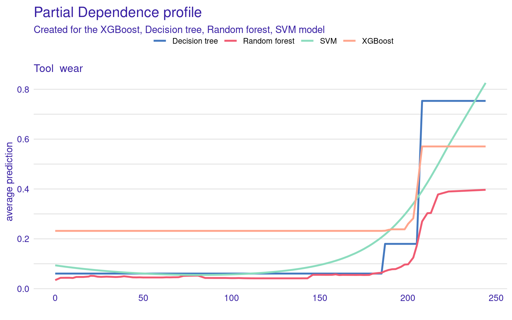
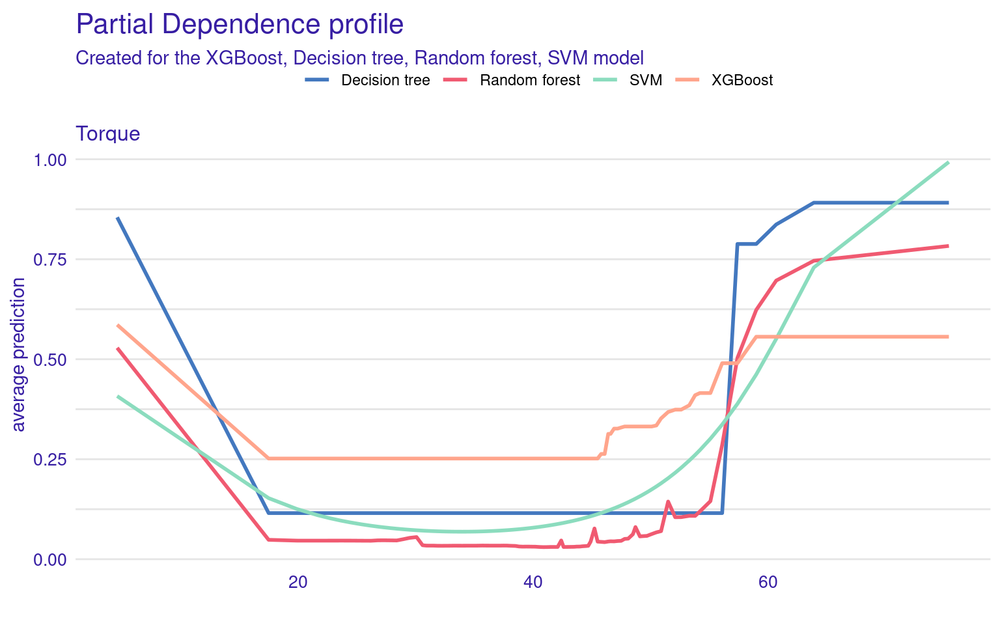
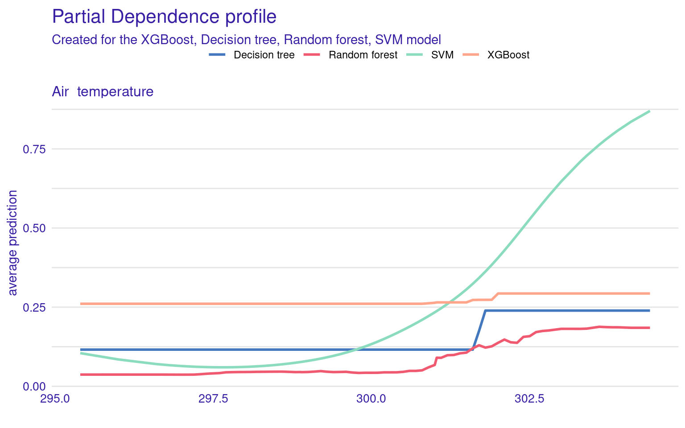
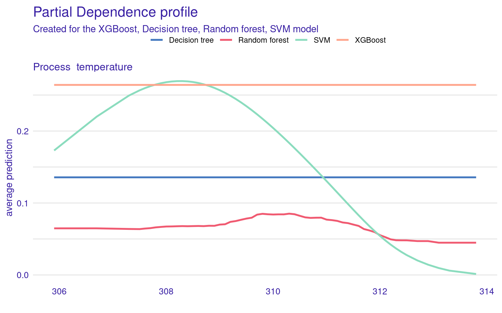
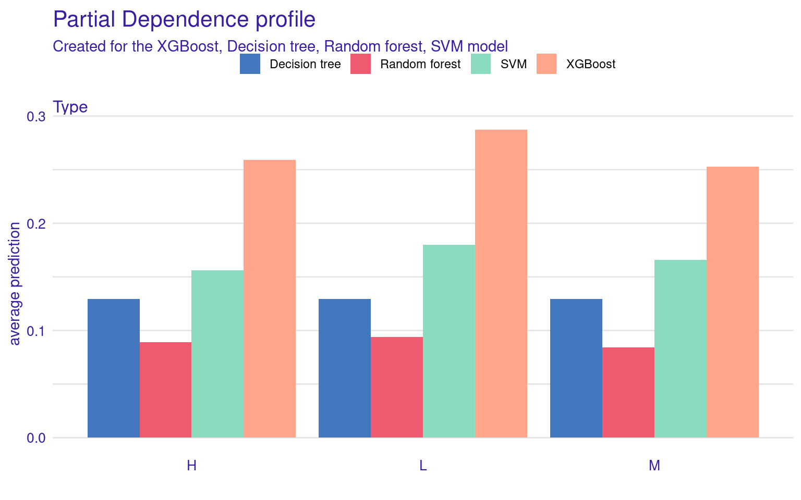